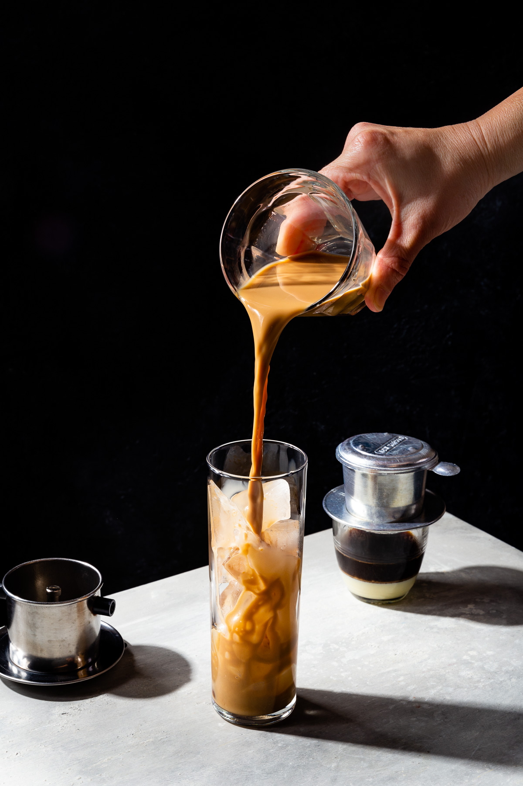

Cafe Sua Da - Vietnamese Iced Cofffe

Description
A strong Vietnamese iced coffee recipe with sweetened condensed milk.
Chilled on ice, this makes an unbeatable Southeast Asian treat.
Even those who only take their coffee black will like this.
Serve it on hot summer days or as an evening treat.
We learned this in Vietnam, and now drink almost all our espresso this way.
- Prep Time: 3 minutes
- Brew Time: 10 minutes
- Total time: ~15 minutes
Ingredients
- Single Serve Vietnamese Phin (4oz)
- 15g of dark roast coffee beans
- 2 tablespoon of condensed milk
- 5 medium ice cubes
Directions
- Grinding the 15g of coffee beans. The grind here should be fine; similar to how Moka pot is brewed.
- Pack your coffee beans into the Phin filter and drop the filter press on top of the coffee.
- Heat up your water to a boiling point (100C)
- Prepare your glass by adding the 2 tablespoons of condensed milk
- Add ~0.5oz (or enough to cover the filter press) of hot water
- Let the coffee bloom for about 15 - 30 seconds
- Then fill water to the top of the Phin and wait for about 10 minutes to brew
If you like your coffee a little lighter, you can do a second pour of hot water once after first brew is filtered all the way through.